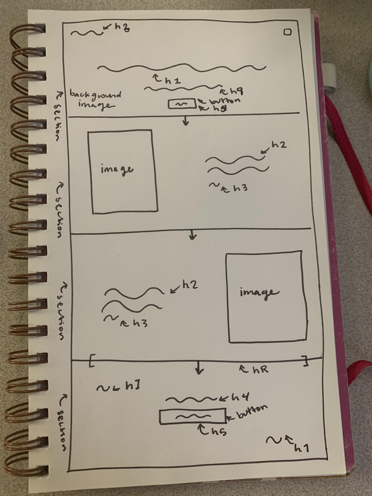
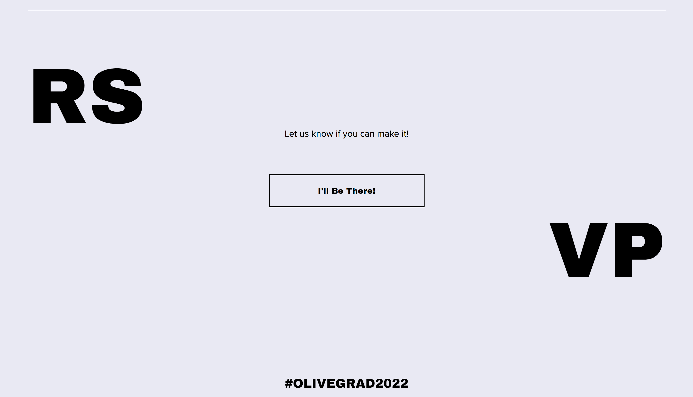
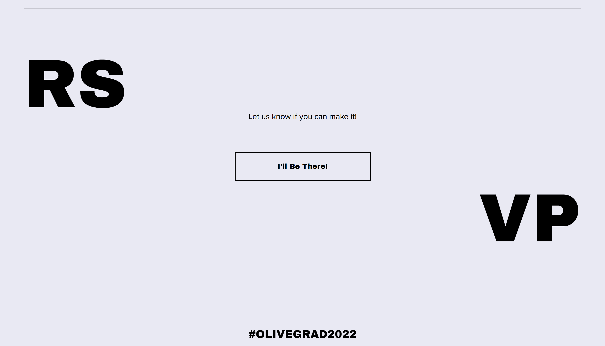

Pencil sketch wireframe
Style observations
- text: sans serif font, similar to Ariel but wider and more geometric, bold and normal weight, some use of all caps, 5 sizes, center and sides alignment
- Palette: HEX: #ebebf2, HEX: #2c2a2f, HEX: #b58d7a, HEX: #ffffff
- image: hero image placedto take up entire first page with text overlaying the image
- header fixed position at top
Screenshots

 
